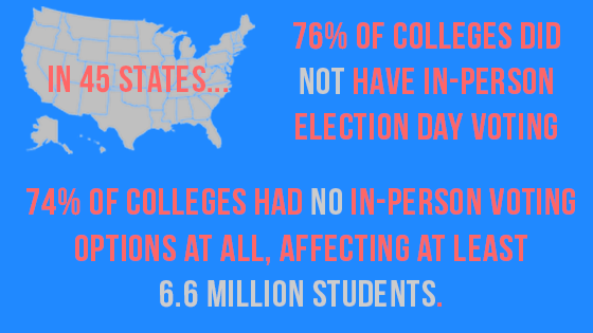

By DodgertonSkillhause/Morguefile
Making change in America is simple in theory: Cast a vote to make your voice heard. But in practice, democracy is never that easy, and the countrys youngest voters face unique obstacles to casting their ballots in this years midterm elections.
Motivation isnt the issue. In a survey from this August, the Fair Election Centers Campus Vote Project found that 70% of college students say they're motivated to vote. But the same survey saw only 52% of students say they felt their vote had the power to make a change. That lack of faith in the political system can discourage some Gen-Zers from voting altogether.
It’s pretty cut and dry: Gen Z does want to effect political change. For many in this demographic cohort—typically defined as being born between the late 1990s and early 2010s—Tuesday’s midterm is the first election in which they’re old enough to participate. But when voting in the midterms doesn’t look accessible, straightforward, or effective, young voters can be discouraged from participating. That’s where a few key organizations are stepping in to keep Gen Z on track and involved.
"Its almost problematic that folks are as aware of how polarized our system has gotten,"says Mike Burns, national director of the Campus Vote Project. "When they think that their individual vote might not have a direct impact on the election given all these other political factors, then we can see them get derailed"."
With so many Gen-Zers currently enrolled in college, polling places should be easily accessible. Right?
“Colleges just make such logical sense for a good voting place,” explains Brianna Cayo Cotter, MTV’s SVP of social impact. “They’re already ADA equipped, they can deal with crowds, they’re population hubs.”
But in reality, being in college can be a barrier to in-person voting. Research conducted by MTV and Duke University found that of the 45 states with Election Day polling data from 2020, 76% of colleges did not have in-person Election Day voting options and 74% of colleges had no in-person voting options at all, affecting at least 6.6 million students. To top it off, 54% of colleges in states with early-voting options are more than one mile from their nearest early-voting location, no small trek for students with limited transportation options.
That all amounts to students having to put in a concerted effort to vote, which for a busy college student can be the difference between casting a ballot or sitting out of an election.
That’s why MTV teamed up with the Campus Vote Project in 2020, investing in its mission of creating polling places on campuses across America and educating students on how to vote. To date, the Campus Vote Project works with more than 280 colleges and universities across 41 states, with plans to continue expanding.
MTV also worked with the Campus Vote Project to launch its own Campus Challenge, which incentivizes students to establish on-campus voting sites and creates toolkits to help them do so. As Cayo Cotter puts it, sometimes it’s as simple as asking your local election official for a polling place on campus and hoping for a yes. Young voters just need to know they have the option.
“It’s not rocket science,” she says. “Basically, democracy needs a CMO. And we are able to be that for young voters.”
While MTV and the Campus Vote Project are meeting Gen Zers on the ground, NBC, the country’s oldest broadcasting network, is meeting them on their smartphones.
“It’s critical that we go to the places where young people are seeking news,” says Catherine Kim, SVP of global digital news for NBC News and MSNBC. “More and more, we know they are getting their news first from social platforms.”
NBC has long been at the forefront of delivering news to younger voters—its Stay Tuned brand has a reach of 12 million across social platforms—and its latest initiative on TikTok, #NBCDebunks, is wielding that influence to fight misinformation. In the video series, NBC breaks down myths, misconceptions, or lies around the election being spread via TikTok, keeping young voters up to speed on the truth.
With 26% of U.S. adults under 30 saying they regularly get news from TikTok—up from just 9% in 2020—making sure users have access to credible information has never been more important. For NBC, that means engaging with the app through comment sections and observing trends to see where misinformation is taking place.
“When we think we have something to add to the conversation—to push it forward or illuminate, provide some insight or clarity, or set the record straight—we happily engage in those ways,” Kim says.
And to ensure #NBCDebunks is effective, the series treats Gen Z as its peers, not as its students, an approach NBC has honed over its years targeting the generation.
“To us it’s an absolute necessity and essential for a Gen Z brand to be on social platforms, but we want to do it very deliberately,” explains Kim. “By that I mean speaking in the voice of Gen Z, in a style and tone that’s organic, native, and authentic to that audience, which is a very one-on-one, personal approach.”
Ultimately, education and awareness are key to getting young voters to participate in elections. Longtime voters might take for granted their familiarity with the voting process. For Gen Z, even the fundamentals of voting may be unfamiliar—and it can be intimidating to ask for an explanation to a purportedly “simple” system. But it’s crucial that young people feel empowered to vote to make a difference on the issues they care most about, including reproductive rights, climate change, and gun violence.
“There are so many races that are going to be so close this time. We saw it in 2018. We saw it in 2020,” says the Campus Vote Project’s Burns. “Collectively, as a community, especially on campuses when there are a lot of students and they can organize their peers, their ability to impact elections is huge.”
Even if every eligible Gen Z voter were suddenly fully educated on the voting process, the issue of youth voter participation wouldn’t go away. The problem is “perennial,” Burns says, as new voters come of age with every election, meaning initiatives like MTV’s, the Campus Vote Project’s, and NBC’s will always be essential services.
Youth voter turnout stayed between 17% and 22% in every midterm election from 2002 to 2014, with a jump to 32% in 2018. It was a promising upswing, but one it will take effort to maintain. And even as youth voter share has kept relatively steady, between 11% and 13%, in all midterm elections since 1994, young voters’ strong lean toward Democratic candidates means they can still have an outsized impact on elections.
“Every election, there are new students, and they are in a learning environment where we have an amazing opportunity to both take advantage of that learning environment, and also the resources at those institutions to welcome them into the process and to help them navigate how to participate in our democracy,” Burns says. “We should have a systemic solution to this systemic issue.”
How many young voters will actually turn out for the midterms is still a mystery. But with Gen Z making up nearly a quarter of the U.S. population, keeping America’s youngest voters informed on where, when, and how to vote can only help our democracy be truly representative.